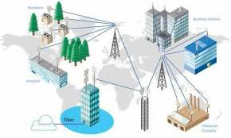

Establishing high-availability, secure, and ruggedized connectivity for hybrid environments.
Designed for maximum uptime and zero-latency communication between office departments.
Extending the corporate fabric to warehouses and open-air campuses using industrial-grade hardware.

Diagram illustrating the Core-to-Access hierarchy, VLAN segmentation, and outdoor PtP links.
The primary objective of this project was to establish a unified network ecosystem that seamlessly bridges an 8-story corporate office with an extensive outdoor campus perimeter. For the indoor configuration, I implemented a hierarchical design consisting of a 40GbE core backbone feeding into stackable PoE+ access switches. This setup utilizes strict VLAN tagging and Inter-VLAN routing to isolate sensitive HR and Finance data from general guest traffic. Security was prioritized through the deployment of a Next-Generation Firewall (NGFW) with deep packet inspection and dual-ISP SD-WAN for 99.99% redundancy.
To address the outdoor requirements, the challenge moved from data density to environmental durability. I configured long-range Point-to-Point (PtP) wireless bridges to link remote security kiosks without the cost of trenching. These links operate on a dedicated 60GHz frequency to avoid interference from public 2.4GHz bands. All outdoor cabling utilized Shielded Twisted Pair (STP) Cat7 with grounded surge protectors to prevent equipment failure during electrical storms. This dual-environment approach ensures that an employee moving from their indoor desk to an outdoor courtyard maintains a secure, uninterrupted connection via seamless roaming protocols (802.11k/v/r).